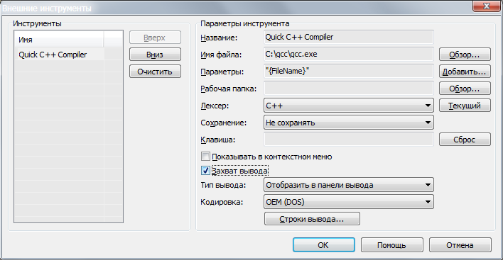
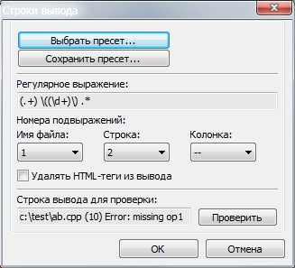
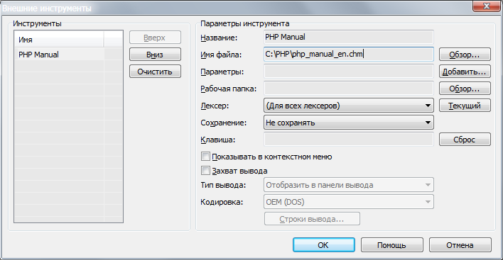
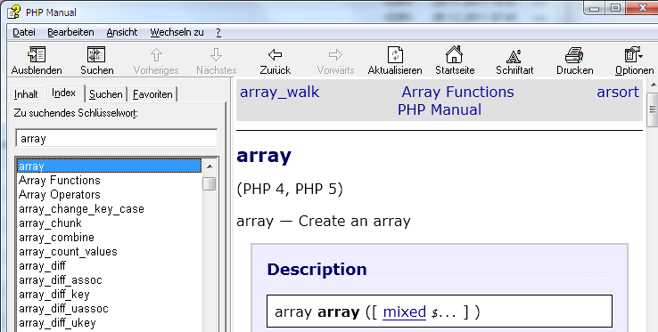

Диалог, который появляется по команде меню "Инструменты -- Настроить внешние инструменты", позволяет подключать к работе SynWrite другие приложения:
Консольные приложения можно подключить к работе несколькими способами: перехват их вывода в "Панель вывода", перенаправление этого вывода в новый файл, замена выделения на выданный текст и другие. Для указания подходящего способа включите опцию "Захват вывода" и выберите из выпадющего списка "Тип вывода".
Все добавленные внешние инструменты доступны как элементы
главного меню "Инструменты" или, опционально, как элементы контекстного меню редактора.
В текущей версии можно добавить не более 16 внешних инструментов.
При настройке внешних инструментов в полях "Имя файла" и "Параметры" можно использовать следующие макропеременные (почти полный их список появляется по кнопке "Добавить", справа от поля "Параметры"):
|
{FileName} {FileDir} {FileNameOnly} {FileNameNoExt} {FileExt} |
Свойства файла для текущей группы вкладок:
|
{FileName2} {FileDir2} и т.д. |
Свойства файла для противоположной группы вкладок. (Если текущая группа - 1, то для группы 2; если текущая - 2, то для группы 1; иначе пустые строки.) |
{FileNameN1} - {..N6} {FileDirN1} - {..N6} и т.д. |
Свойства файла для групп 1...6. |
|
{ProjectDir} {ProjectWorkDir} {ProjectMainFileName} {ProjectMainFileDir} |
Свойства проекта:
|
| {CurrentWord} | Слово, на которое указывает каретка (может быть пустым). |
| {CurrentLine} | Содержимое текущей строки (может быть пустым). |
| {CurrentLineNum} | Номер текущей строки (нумерация с 1). |
| {CurrentColumnNum} | Номер текущей колонки (нумерация с 1). |
| {SelectedText} | Текущий выделенный фрагмент текста (может быть пустым). |
| {SelectedTextForWeb} | Текущий выделенный фрагмент текста, адаптированный для интернет-адресов (может быть пустым). Напр., выделенный текст "some word info" даст значение "some+word+info". |
|
{SelectionFileName} {SelectionFileNameNum} |
Полный путь к временному файлу, содержащему копию текущего выделенного фрагмента (Юникод-кодировка). Второй вариант: нумерованное имя файла, чтобы не переписать старый файл. |
|
{SelectionFileNameAnsi} {SelectionFileNameAnsiNum} |
Полный путь к временному файлу, содержащему копию текущего выделенного фрагмента (ANSI-кодировка). |
| {ContentFileName} | Полный путь к временному файлу, содержащему копию текста текущего редактора (Юникод-кодировка). |
| {ContentFileNameAnsi} | Полный путь к временному файлу, содержащему копию текста текущего редактора (ANSI-кодировка). |
| {Interactive} | Текст, который введет пользователь по запросу перед вызовом внешнего инструмента. |
| {InteractiveFile} | Имя файла, который выберет пользователь по запросу перед вызовом внешнего инструмента. |
| {InteractiveDir} | Имя папки, которую выберет пользователь по запросу перед вызовом внешнего инструмента. |
| {SynDir} | Свойство SynWrite - папка, где установлена программа. |
| {SynIniDir} | Свойство SynWrite - папка, где хранятся файлы настроек ("Syn*.ini"). |
| {SynDrive} | Свойство SynWrite - буква диска с символом двоеточия, для папки установки программы. |
Чтобы SynWrite мог выполнять переходы из "Панели вывода" к местам, указанным в ошибках и предупреждениях, нужно настроить шаблоны вывода. Включите опцию "Захват вывода", укажите в списке "Тип вывода" вариант "Отобразить в панели вывода" и нажмите "Строки вывода". Для некоторых распространенных инструментов есть готовые настройки, доступные по "Выбрать пресет...". Для нового инструмента требуется ручная настройка.
Пусть есть файл "c:\test\ab.cpp" и нужно применить C++ Compiler "qcc.exe" как внешний инструмент. Диалог настройки может выглядеть так:

Теперь при вызове этого инструмента выполнится такая команда:
"C:\qcc\qcc.exe" "c:\test\ab.cpp"
Текстовые сообщения от "qcc.exe" попадут не в консольное окно, а в
"панель вывода" внутри SynWrite. Появятся строки, типа таких:
c:\test\ab.cpp (10) Error: missing op1
c:\test\ab.cpp (11) Error: missing op2
c:\test\ab.cpp (12) Error: missing something
Видно, что компилятор нашел в исходном файла несколько ошибок. Чтобы устранить очередную проблему, необходимо перейти к указанному месту в исходном файле. SynWrite сделает это автоматически, но сначала нужно продолжить настройки и указать, как извлечь из сообщений имена файлов и номера строк/колонок. Эта настройка выполняется в диалоге "Строки вывода". Регулярное выражение позволяет распознать нужные части. Например, оно может быть таким:
.+ \(\d+\) .*
Осталось заключить найденные части в круглые скобки, чтобы на них можно ссылаться, как на подвыражения. Первая часть: ".+" - это имя файла, вторая часть "\d+" - это номер строки. Получится так:
(.+) \((\d+)\) .*
Теперь для "Имя файла" указываем "1" (то есть первое подвыражение), для "Строка" указываем "2" (второе), для "Колонка" оставляем "--".

Если вы указали все поля, можете протестировать их: введите строку для проверки и нажмите "Проверить".
Замечание. В некоторых случаях "Имя файла" нужно оставить в виде "--". Это может понадобиться, если в выводе нет указания на файлы, а исходный файл общий для всех сообщений этого приложения.
После самостоятельной настройки "Строк вывода", вы можете сохранить эти настройки в файл (например, чтобы поделиться ими). Есть две кнопки "Выбрать пресет..." и "Сохранить пресет...", последняя позволяет сохранить ваши настройки. В процессе сохранения нужно будет указать имя и файл (без пути) для нового пресета. В конце появится сообщение с полным именем файла, хранящего новый пресет.
Через внешние инструменты можно выполнять быстрый доступ к CHM и HLP файлам. SynWrite откроет эти файлы и выполнит в них поиск текущего слова или выделенного фрагмента. Это удобно, если в работе применяются руководства типа "php_manual_en.chm" (для PHP). Достаточно указать слово, например, "array", и вызвать этот файл справки.
Во-первых, создайте новый внешний инструмент, указав нужный файл
справки в поле "Имя файла".

Теперь в тексте выделите или укажите кареткой слово "array", затем
вызовите команду меню "Инструменты -- PHP Manual". Откроется справка на
странице с информацией о "array".

Можно вызывать браузер с заданным адресом интернет-страницы. Например, вот так можно вызвать официальную справку по тегам HTML:
Теперь кареткой укажите на тег HTML и вызовите команду "Инструменты -- Tag Help".
Можно запускать скрипты JavaScript (JS), используя стандартую функциональность WSH. Вот как могут выглядеть настройки, если JS-скрипту нужно передать имя файла: